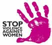

|
|
|
Browsing
Contact Us |
Campaigners |
Face to Face |
Tribune |
Interview |
News |
On the Web |
One Million |
Report
Farsi | Français | German | Italian | Spanish | العربية Also in this section
|
 Campaign Activists Hit the Streets on International Day for Elimination of Violence against Women, November 25Thursday 26 November 2009 Change for Equality: For November 25, the International Day for the Elimination of Violence against Women, Campaign activists in Isfahan and Rasht developed two educational brochures. The brochures explain the history behind November 25 and provide information about violence against women for the general public. Besides defining the various types of violence faced by women, these brochures address violence that is specific to the region, including honor killings and female genital mutilation. The brochures also provide information on resources for women who need more information and who need services. Campaign activists in Rasht, Isfahan and Tehran took to the streets on November 25 to distribute these brochures to the public. They used the opportunity to discuss violence against women and the demands of the Campaign with citizens. They will continue to engage in these discussions with citizens in the days to come. These activists intend to write about their experiences and discussions with the public about gender-based violence. These accounts will be posted gradually in the face-to-face section of our website and if resources permit those most relevant to an international audience will be translated and posted on the English site. Also, for sixteen days, and in solidarity with the 16 Days of Activism against Gender Violence Campaign, the site of Change for Equality will be posting articles related to violence, with the aim of raising awareness among the public, informing its readers about the different dimensions and types of violence against women and increasing discussion and activism in this area. These pieces will include interviews, original articles about violence in Iran and the region, as well as translation of relevant information. The series was kicked off with an interview with lawyer and women’s rights activist Zohreh Arzani, conducted by Delaram Ali. In the interview, Arzani, who is a well respected lawyer and activist in the Campaign, outlines the various international resolutions and laws which could be used to combat violence as well as the negative impact of discriminatory laws on the lives of women which reinforce violence against women. Arzani claims that “if the laws were more supportive, we would have a better chance of combating and eliminating violence against women in Iran.” Other articles which will be posted in the coming days include some of the following: — An interview with Nahid Jafari, women’s rights activist and member of the Campaign, who has been conducting violence prevention workshops for citizens and activists for nearly ten years; — A letter from a women suffering from violence and her legal obstacles she has faced; — A report on violence against women in Saudi Arabia; — An interview with Asieh Amini, on her work to eliminate stoning sentences for sexually based offenses and youth executions; — A report on a safe house for survivors of violence in Germany; — Personal accounts written by activists involved in the Campaign, which will be published in the Face-to-Face section of our website. Some of these articles or excerpts from the articles which are relevant for an international audience will be translated and posted to the English section of the site at a later date. |